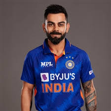

Favourite cricketrs
Rohith sharma :
Rohit Saharm (born 30 April 1987) is an Indian cricketer and the captain of national cricket team in Test and ODI formats. He is widely regarded as one of the best opening batters of all time.[3] He is also known for hitting sixes. He is a right-handed batsman who plays for Mumbai Indians in Indian Premier League and for Mumbai in domestic cricket. Rohit previously captained India in all three formats. After leading the victory at the 2024 Men's T20 World Cup, he announced his retirement from T20Is.[4][5]
Know more.
Virat Kohli :
Virat Kohali (born 5 November 1988) is an Indian international cricketer who plays Test and ODI cricket for the national team and is a former captain in all formats. He is a right-handed batsman and an occasional right arm medium pace bowler. Kohli holds the highest IPL run-scorer record, ranks third in T20I, third in ODI, and stands the fourth-highest in international cricket.[4] Regarded as one of the greatest batsmen of all time, he holds the record for the most centuries in ODIs and has the second most centuries in international cricket all time.[5]

Know more.
Smriti Mandhana:
Smriti Mandhana (born 18 July 1996) is an Indian international cricketer who plays for the national team.[2] She is fourth on the list of most international centuries in international cricket. Mandhana plays for Royal Challengers Bangalore in the Women's Premier League .[3] In domestic cricket, she represents Maharashtra.[2] Mandhana has won four ICC Awards including Cricketer of the Year and the ODI Cricketer of the Year.[4]
Know more.